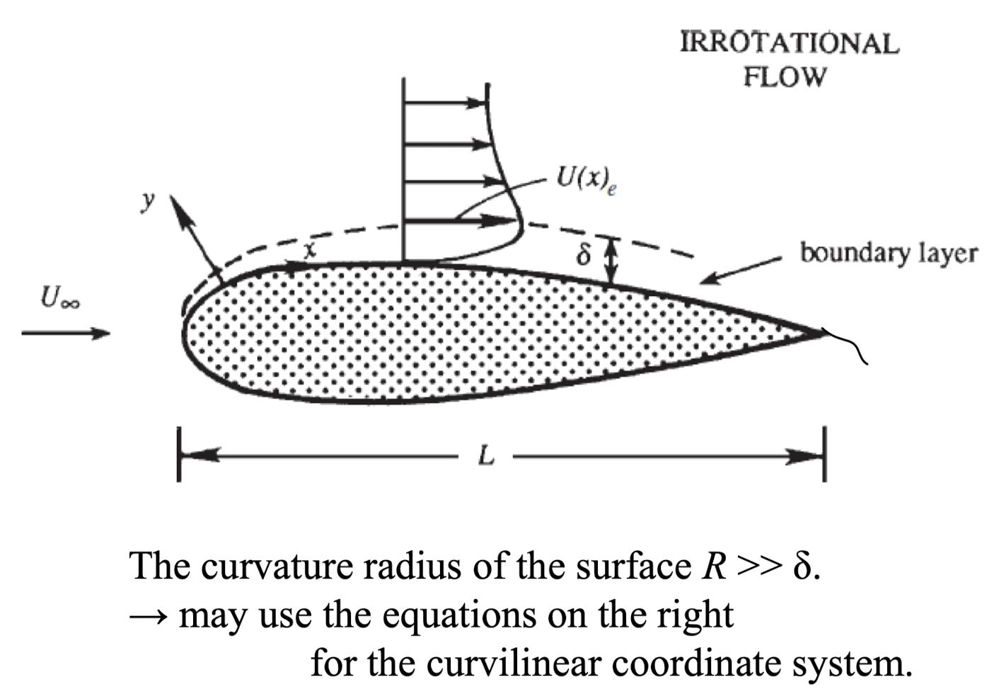
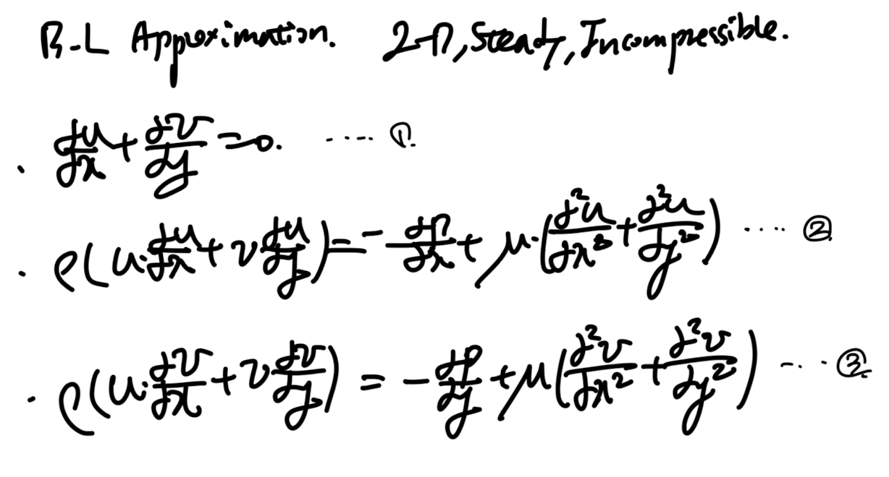
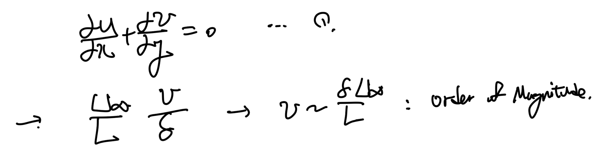
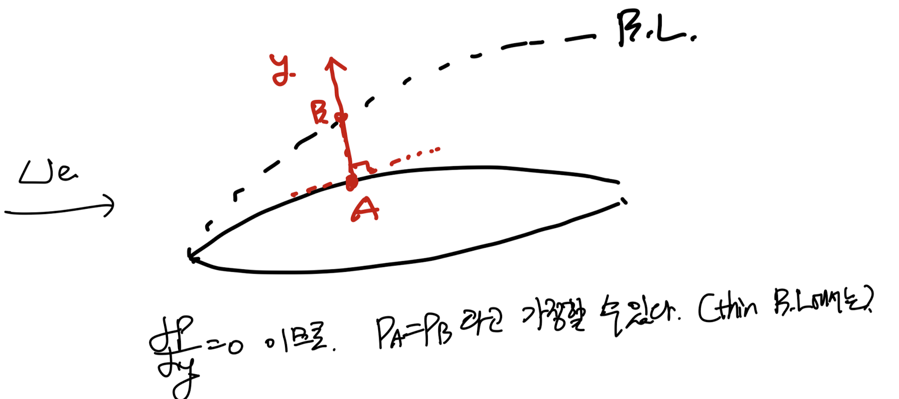
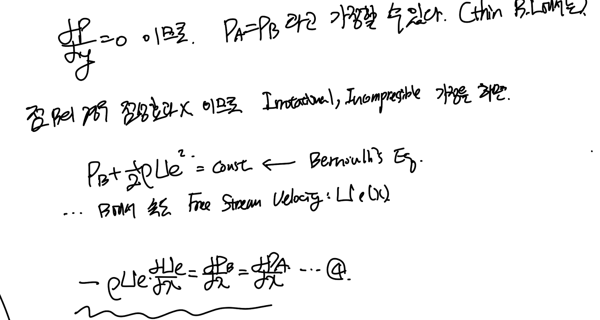
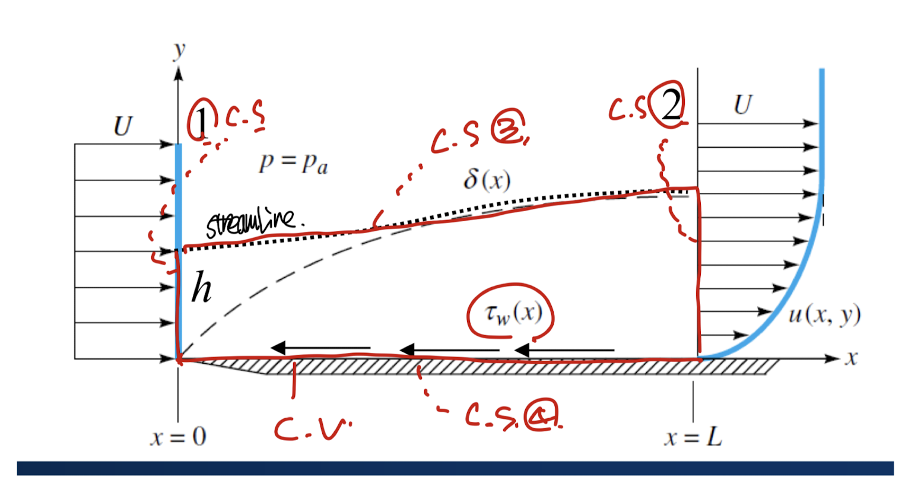
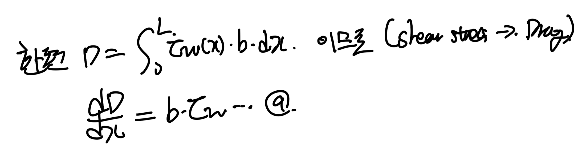
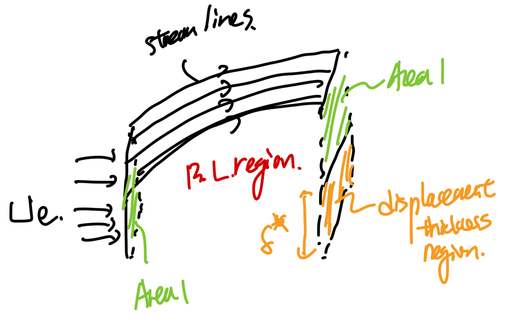
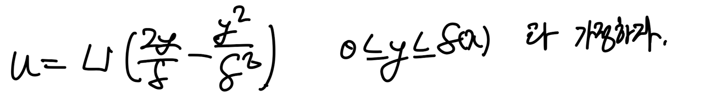
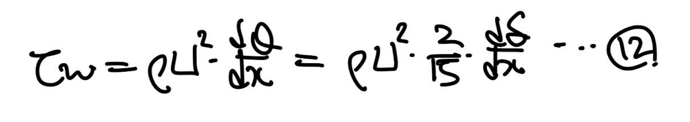

<!DOCTYPE html>
<html lang="ko">
<head>
  <meta charset="utf-8">
  <meta name="viewport" content="width=device-width, initial-scale=1">
  <title>Ch6 Boundary Layer theory part1 - thickness | Sehyeog Kim</title>
  <link rel="stylesheet" href="../../../assets/css/style.css">
</head>
<body>
  <!-- Mobile header -->
  <header class="mobile-header">
    <span class="site-title">Sehyeog Kim</span>
    <button class="menu-toggle" aria-label="Menu">&#9776;</button>
  </header>
  <div class="sidebar-overlay"></div>

  <div class="site-wrapper">
    <!-- Sidebar -->
    <aside class="sidebar">
      <div class="sidebar-bg">
        
      </div>
      <div class="sidebar-profile">
        
        <h1 class="profile-name">Sehyeog Kim</h1>
        <p class="profile-bio">AI &amp; Computational Engineering<br>Knowledge Base</p>
        <div class="profile-links">
          <a href="https://github.com/Sehyeogkim" target="_blank" rel="noopener">
            <svg viewBox="0 0 16 16" width="16" height="16" fill="currentColor"><path d="M8 0C3.58 0 0 3.58 0 8c0 3.54 2.29 6.53 5.47 7.59.4.07.55-.17.55-.38 0-.19-.01-.82-.01-1.49-2.01.37-2.53-.49-2.69-.94-.09-.23-.48-.94-.82-1.13-.28-.15-.68-.52-.01-.53.63-.01 1.08.58 1.23.82.72 1.21 1.87.87 2.33.66.07-.52.28-.87.51-1.07-1.78-.2-3.64-.89-3.64-3.95 0-.87.31-1.59.82-2.15-.08-.2-.36-1.02.08-2.12 0 0 .67-.21 2.2.82.64-.18 1.32-.27 2-.27.68 0 1.36.09 2 .27 1.53-1.04 2.2-.82 2.2-.82.44 1.1.16 1.92.08 2.12.51.56.82 1.27.82 2.15 0 3.07-1.87 3.75-3.65 3.95.29.25.54.73.54 1.48 0 1.07-.01 1.93-.01 2.2 0 .21.15.46.55.38A8.013 8.013 0 0016 8c0-4.42-3.58-8-8-8z"/></svg> GitHub
          </a>
        </div>
      </div>
      <nav class="sidebar-nav">
        <a href="/" class="nav-item nav-home">Home</a>
        <span class="nav-label">Categories</span>
        <a href="/blog/agentic-ai/" class="nav-item">Agentic_AI<span class="nav-post-count">8</span></a>
        <a href="/blog/blood-flow-and-metabolism/" class="nav-item">Blood-Flow-and-Metabolism<span class="nav-post-count">12</span></a>
        <a href="/blog/cardiovascular-diseases/" class="nav-item">CardioVascular-Diseases<span class="nav-post-count">8</span></a>
        <a href="/blog/computational-linear-algebra/" class="nav-item">Computational-Linear-Algebra<span class="nav-post-count">15</span></a>
        <a href="/blog/continuum-mechanics/" class="nav-item">Continuum-Mechanics<span class="nav-post-count">9</span></a>
        <a href="/blog/deep-learning/" class="nav-item">Deep-learning<span class="nav-post-count">14</span></a>
        <a href="/blog/finite-element-method/" class="nav-item">Finite-Element-Method<span class="nav-post-count">1</span></a>
        <a href="/blog/fluid-mechanics/" class="nav-item">Fluid-Mechanics<span class="nav-post-count">18</span></a>
        <a href="/blog/gas-dynamics/" class="nav-item">Gas-Dynamics<span class="nav-post-count">24</span></a>
        <a href="/blog/heat-transfer/" class="nav-item">Heat-transfer<span class="nav-post-count">8</span></a>
        <a href="/blog/math/" class="nav-item">math<span class="nav-post-count">0</span></a>
        <a href="/blog/numerical-heat-transfer-and-fluid-flow/" class="nav-item">Numerical-Heat-transfer-and-Fluid-flow<span class="nav-post-count">14</span></a>
        <a href="/blog/solid-mechanics/" class="nav-item">Solid-Mechanics<span class="nav-post-count">25</span></a>
        <a href="/blog/thermodynamics/" class="nav-item">Thermodynamics<span class="nav-post-count">14</span></a>
        <a href="/blog/viscous-flow/" class="nav-item active">Viscous-Flow<span class="nav-post-count">28</span></a>
        <a href="/blog/과학/" class="nav-item">과학<span class="nav-post-count">26</span></a>
        <a href="/blog/취미/" class="nav-item">취미<span class="nav-post-count">2</span></a>
      </nav>
    </aside>

    <!-- Main content -->
    <main class="main-content">
      <div class="breadcrumb">  <a href="/">Home</a><span class="sep">/</span>  <a href="/blog/viscous-flow/">Viscous-Flow</a><span class="sep">/</span>  <span>Ch6 Boundary Layer theory part1 - thickness</span></div>
<a href="/blog/viscous-flow/" class="back-link">&larr; Back to Viscous-Flow</a>
<div class="page-header"><h1>Ch6 Boundary Layer theory part1 - thickness</h1></div>
<div class="post-meta"><span class="meta-item"><span class="meta-label">Date:</span> 2024-12-12</span><span class="meta-item"><span class="meta-label">Category:</span> Viscous-Flow</span><span class="meta-item"><span class="meta-label">Source:</span> <a href="https://jeffdissel.tistory.com/147" target="_blank" rel="noopener">link</a></span></div>
<article class="post-content"><p>고체 surface위를 유체가 흐르는 경우,<br />
no-slip boundary condition<br />
(속도 = 0 on the surface)<br />
+ 점성효과로 인하여,<br />
고체 표면 근처에서 속도장은<br />
Free stream Velocity (U∞)과 다르다.<br />
<br />
그 속도가 감소한 영역을,<br />
boundary layer이라고 하는 것은<br />
익숙하여 다들 아실 것이다.<br />
이제 수학적으로 boundary layer의<br />
thickness, shear stress, pressure difference는 어떻게 되는지,<br />
분석해보자.<br />
다음과 같이, 비행기의 날개 주변에 생긴<br />
boundary layer를 살펴보자.<br />
<br />
boundary layer thickness 실험적으로 측정했을때,<br />
사실 굉장히 작다.<br />
따라서, 우리는 curvature를 무시하고<br />
flat plate라고 생각을 한후,<br />
Steady 2D Boundary flow<br />
Equations들을 적용시킬 수 있다.<br />
<br />
1. 연속방정식, 2,3 모멘텀 보존방정식(Navieres stokes eq, x,y방향)<br />
여기서 ch5에서 했던 방식으로<br />
order of magnitude<br />
로<br />
위 식에서 어느 항이 의미있는 값을 가지고 있고,<br />
어느 항이 소거될 만큼 작은 (상대적인)크기를 가지고 있는지<br />
확인해보자.<br />
먼저 1번 연속방정식을 통해 y방향 속도의 크기는 다음과 같다.<br />
<br />
2번 x방향 모멘텀 방정식을 order of magnitude로 분석을 해보면,<br />
<br />
boundary layer thickness가 굉장히 작으므로,<br />
<br />
우항 d^2u/dx^2을 소거할 수 있다.<br />
<br />
같은 방식으로 3번식은 dp/dy 빼고 전부 소거된다.</p>
<h1>소거의 의미</h1>
<p>order of magnitude 분석시, 굉장히 작은 값<br />
= (상대적으로)무의미한 값<br />
<br />
여기서 재미있는 사실은 3'식을 통해서,<br />
우리는 Boundary layer 안과 밖의 압력이 (같은x일때)<br />
y에 따라 변화가 없음을 알 수 있다.<br />
-&gt; P_b = P_a<br />
<br />
boundary layer밖은 점성의 효과가 없는 영역이다<br />
+ Irrotational incompressible 가정을 더해주면 = potential flow가 된다.<br />
-</p>
<blockquote>
<p>State B에 대하여 Bernoulli Eq 적용가능.<br />
<br />
이후 Pa = Pb를 이용하여,<br />
여기서 아주 중요한 4번식이 유도된다.<br />
이제 order of magniutde로 1,2,3식을 다듬으면,<br />
다음과 같이 1,6식이 도출되고,<br />
이를 Boundary layer Eq이라고 부른다.<br />
<br />
가장 중요한 boundary condition은 다음과 같다.<br />
</p>
</blockquote>
<hr />
<p>자 지금까지 boundray layer equation (1,6)을 유도하였다.<br />
이 방정식을 꼭 계속해서 기억하고, 이를 이용하여<br />
이제 우리가 진짜 풀고싶은 문제<br />
boundary layer thickness 구하기,<br />
shear stress구하기 등등을 풀어보자.</p>
<hr />
<p>[boundary layer thickness, δ ]<br />
가장 큰 고민은 저 viscous region layer두께가 얼마일까?<br />
x에 따라서 증가하는 것 같은데<br />
어떻게 증가하는지 식을 세울 수 있나?<br />
라는 질문을 프란들은 품었고 이를 수학적으로 풀었다.<br />
이를 풀기전에 몇가지 개념을 정의하고 가야한다.<br />
(차근차근 천천히 가보자.)<br />
a) Momentum Thickness, θ<br />
다음과 같이 flat plate boundary layer유체를 살펴보자.<br />
빨간색 눕힌 사다리꼴<br />
을<br />
Control volume<br />
이라고 정의하고<br />
분석 할 것이다.<br />
<br />
flat plate boundary layer w/ a stream line.<br />
Reynolds transport theorem(유체역학 포스터)<br />
을 활용하여,<br />
들어오고 나가는 mass flux가 같아야 함을 이용하자.<br />
<br />
위 식을 정리하면 7번 관계식이 나온다.<br />
<br />
(추후에 쓰임, 곧 쓰임)<br />
이번에는 Reynolds Transport theorem<br />
-Momentum Conservation on Control Volume식<br />
을 세워보자.<br />
<br />
우리가 위에서 정의한 빨간색 눕혀진 사다리꼴 CV에 적용하자.<br />
(알짜힘 = -x방향 Drag foce)<br />
<br />
쭉 전개하면 D를 정리할 수 있다.<br />
<br />
여기서 빨간색 밑줄친 항에 아까 유도한 7번식을 대입해주자.<br />
<br />
연속방정식 Reynolds transport theorem에서 유도.<br />
정리하면, 최종적으로 8번식으로 drag force가<br />
한개의 integral 로 정리된다.<br />
<br />
<br />
<br />
<br />
8번식을 보면, 우리가 u = u(y)식을 알면,<br />
drag force를 boundary layer thickness에 관한<br />
함수로 나타낼 수 있다.<br />
(추후에 u(y) 식 가정하고 대입할 예정)<br />
여기서 drag force는 사실 고체면과의 shear stress의 적분 값이다.<br />
<br />
여기서 단순화를 위해서<br />
θ: Momentum Thickness<br />
로 적분 부분을 치환해주자.<br />
<br />
두개의 drag force 방정식을 우리가 유도했으므로,<br />
연립해주면 최종적으로 10번식<br />
momentum integral relation 식.<br />
즉, shear strss와 momentum thickness 미분식이 나온다.<br />
(위식은 aminar turbulent 모두 만족)<br />
자 여기까지, 우리는<br />
boundary layer thickness를 구하기 위한<br />
momentum thickness<br />
momentum integral relation<br />
을 유도하였다.<br />
boundary layer thickness를 위해.<br />
두번째 알아야 할 개념<br />
b) Displacement Thickness, δ<em><br />
<br />
left: boundary 내부 velocity profile<br />
좌측 = 실제 boundary layer 내부 velcity profile (높이 = h)<br />
우측 = free stream profile(Ue)라고 가정했을때 (높이 = h-δ</em>)<br />
좌 우 상황의 높이 차이를<br />
Displacement Thickness: δ<em><br />
라고 정의한다.<br />
정의한후, 수식적으로 값을 구하는 것은 이지하다.<br />
그냥 초록색 부분의 면적, 좌 = 우<br />
라는 식을 세우면 된다.<br />
<br />
그렇다면, 왜 굳이 저거를 정의했을까?? 라는 의문이 듣ㄴ다.<br />
이유를 알기 위해<br />
지금까지 다루었던 개념과 연결해보자.<br />
stream line을 기준으로<br />
Figure1<br />
을 살펴보자.<br />
1 -&gt; 2로 control volume을 유체가 지나가는 상황이다.<br />
<br />
Figure1. flat plate boundary layer w/ a stream line.<br />
여기서 재밌는 사실은<br />
Fig1 inlet(1번) 속도 profile = Fig2 오른쪽<br />
Fig1 outlet(2번) 속도 profile = Fig2 왼쪽<br />
<br />
Figure2. right 속도장 높이 (h-δ</em>)<br />
즉, stream line의 높이차이가 바로,<br />
displacement thickness이라는 것이다.<br />
즉, 유체가 viscous 효과로 인해서<br />
원래 흐르든 것보다 위쪽으로 흐른다는 것을 알 수 있다.<br />
그렇다면 정확히 어느정도 위쪽으로 흐르는지,<br />
우리는 옆사진을 figure1을 보았지만, 실제로는<br />
<br />
위 그림처럼 면적만큼 위로 유체가 흐른다.<br />
따라서, 이 면적을 계산하기 위해서<br />
Displacement thickness를 정의하고 유도한다.<br />
이제 진짜. Boundary layer thickness를 구해보자.<br />
<br />
remind) momentum thickness<br />
결국에 사실, u = u(y) velocity profile을 정의해야하는데,<br />
굉장히 많은 실험적 정의가 진행되어 왔다.<br />
예를들어 가장 흔히 쓰이는<br />
flat plate velocity parabolic profile을 다음과 같이 정의하자.<br />
<br />
정의한 Profile을 momentum thickness에 대입해주자.<br />
<br />
그리고 이를 10번 momentum integral relation 식에 대입해주자.<br />
(momentum thickness -&gt; shear stress - 10번식)<br />
<br />
여기에서 shear stress - velocity관계식을 위해,<br />
뉴턴유체 가정<br />
을 더해주면<br />
<br />
이제 두 식을 연립해주고 적분 + BC을 적용시켜주면,<br />
기가 막히게 우리가 원하던<br />
Boundary layer thickness( δ) - x 관계식<br />
이 도출된다.<br />
<br />
최종 displacement thickness - x 관계식.<br />
속도장과<br />
δ-x 관계식을 아는 상황에서,<br />
Displacement thickness도 구할 수 있다( δ*)<br />
</p></article>
      <footer class="site-footer">
        <p>&copy; 2026 Sehyeog Kim. Built with gitfolio-inspired theme.</p>
      </footer>
    </main>
  </div>

  <script src="../../../assets/js/main.js"></script>
</body>
</html>